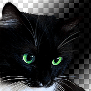

Интерфейс, редактирование раскладки панелей, командное меню «Окно» (Window), создание документов и импорт изображений.
Панель «Инструменты» (Tools), инструменты рисования «Кисть» (Brush) и Ластик (Eraser), панель настройки иструментов. Цвета: интерфейс выбора, панели «Цвет» (Color) и «Образцы» (Swatches), инструмент «Пипетка» (Eyedropper).
Навигация в окне документа: инструменты «Рука» (Hand) и «Лупа» (Zoom), панель «Навигатор» (Navigator), комбинации клавиш для навигации. Панель «Слои» (Layers) и структура документов Adobe Photoshop, прозрачность, инструмент «Перемещение» (Move), комбинации клавиш для выбора слоёв. Отмена и повторение действий, панель «История» (History), сохранение состояний.
Изменение размеров изображения и холста, команды Trim и Reveal All, инструмент кадрирования (Crop), режим свободной трансформации (Free Transform). Выделение и вырезание областей изображения, инструменты «Область» (Marquee) и «Прямолинейное лассо» (Polygonal Lasso), выделение по слою, параметры команды заливки (Fill).
Вставка растровых изображений в Wolgram Mathematica, экспорт и импорт изображений с каналом прозрачности. Выражение Inset[], комбинирование растровых изображений с векторными рисунками.
Объединение последовательности кадров в .gif анимацию.
*Покадровая анимация, особая роль первого кадра.
Семинар *
Углубленные методы редактирования

Цветокоррекция: команды «Кривые» (Curves), «Цветовой тон/Насыщенность» (Hue/Saturation) и «Уровни» (Levels), гистограммы, инструменты «Осветлитель» (Dodge), «Затемнитель» (Burn) и «Губка» (Sponge).
Неразрушающее редактирование: маски яркости и обтравочные маски, «Умные объекты» (Smart objects), «Корректирующие слои» (Adjustment Layers). Элементы векторной графики: инструменты «Фигуры» (Shapes), настройки для рисования стрелочек, векторные маски, панель «Пути» (Paths). Вёрстка: выравнивание и распределение слоёв, «Линейки» (Rulers) и «Направляющие» (Guides).
Ретушь изображений: инструменты «Штамп» (Stamp) и «Восстанавливающая кисть» (Healing Brush), заливка с учётом содержимого (Content-AwareFill). Режимы наложения (Blending modes) слоёв и инструментов рисования, панель настроек «Кисть» (Brush). Панель «Каналы» (Channels): выделение областей, копирование и вставка каналов. Тонкости работы со сглаженными краями, небинарные выделения, устранение подтёков цвета.
*Автоматизация действий: панель «Операции» (Actions), команды «Пакетная обработка» (Batch) и «Переменные» (Variables), применение и написание скриптов.
Выражение Image[], конвертация массивов данных в растровые изображения, приведение данных к регулярной сетке при помощи выражения Interpolation[], график ArrayPlot[]. Выражение ImageData[], чтение данных из изображений.
Комбинирования растровых изображений: выражения ImageAssemble[] и ImageCompose[], автоматическая верстка при помощи выражения ImageCollage[], инфографика.
Арифметика изображений: множитель яркости, гамма-коррекция, тональные кривые (Curves), матричные преобразования цветов. Режимы наложения (Blending modes): выражения ImageAdd[], ImageSubtract[], ImageDifference[] и ImageMultiply[].